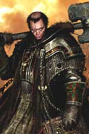

Descrizione Generale
Gli Inquisitori rappresentano la tipologia più controversa dei chierici tanatiani. La fede tanatiana, basandosi sia sulla concezione del bene che su quella dell'ordine, ha necessitato di una figura clericale che, fondamentalmente, si occupasse del mantenimento dell'ordine tanatiano e fosse specializzata nella lotta alle eresie ed ai culti delle Forze Oscure. Gli Inquisitori, appunto, incarnando il fanatismo tanatiano, rappresentano chierici che hanno dedicato il loro addestramento e la loro stessa vita al mantenimento dell'ordine ed alla lotta contro gli esseri delle Forze Oscure, ciò anche a discapito, a volte, del perseguimento del bene sostanziale. Costoro, infatti, pur non essendo malvagi e non potendo commettere impunemente azioni puramente malvagie, possono agire, anche usando la violenza, per contrastare le forze del male e per mantenere l'ordine tanatiano. Il loro uso della violenza e il compimento di altre azioni che di per sé potrebbero considerarsi malvagie, infatti, è ammesso solo allorquando costoro compiono tali azioni per lottare contro le Forze Oscure ed i loro alleati oppure per mantenere l'ordine all'interno della Chiesa tanatiana. Per poter svolgere nel modo migliore tale difficile e delicato compito, tutti gli Inquisitori, oltre ad essere sempre ligi al dovere ed agli ordini dei superiori, devono essere di indole neutrale per evitare che una loro eccessiva bontà possa distoglierli dallo svolgimento dei loro compiti. Gli Inquisitori, quindi, non si dedicano alla cura dei fedeli di una comunità (a differenza dei Predicatori) ma impegnano costantemente la loro vita nella lotta contro il male rappresentando il braccio armato della fede tanatiana.
Gerarchia Ecclesiastica
Gli Inquisitori
sono inseriti nella gerarchia ecclesiastica dei Vescovati. Ogni Vescovo (ed
Arcivescovo), infatti, deve obbligatoriamente disporre di Inquisitori nominando
necessariamente un Primo Inquisitore sotto il proprio diretto comando.
Acquisisce di diritto il titolo di Primo Inquisitore l'Inquisitore di livello
più alto al servizio di un determinato Vescovo (od Arcivescovo), che sia almeno
del rango di Maestro Inquisitore, in caso di parità di livello sarà il Vescovo a
scegliere il Primo Inquisitore. Il Primo Inquisitore ha il ruolo di coordinare e
di comandare gli Inquisitori ad esso sottoposti nel rispetto delle direttive a
lui impartite del suo Vescovo (od Arcivescovo). Una volta raggiunto il 9°
livello di esperienza (dopo aver effettuato il relativo passaggio di
livello), un Inquisitore acquisisce il titolo di Sommo Inquisitore. Tale
titolo è concesso direttamente dal Pontefice Massimo durante primo
Grande Concilio Ecclesiastico utile. Da tale momento in poi, il Sommo
Inquisitore, è libero dal comando diretto del suo Vescovo (od Arcivescovo)
dovendo obbedire unicamente agli ordini Pontefice Massimo. All'interno dei
Vescovati (ed Arcivescovati) gli Inquisitori sono organizzati gerarchicamente in
questo modo:
Iniziato all'Inquisizione è colui che è stato ordinato Inquisitore
all'interno di un Vescovato (od Arcivescovato). Costui può progredire fino al
raggiungimento dei punti esperienza necessari al passaggio al 3° livello di
esperienza. Potrà quindi effettuare direttamente l'addestramento una volta
raggiunto il 2° livello di esperienza, mentre, per poter effettuare il passaggio
al 3° livello di esperienza, sarà necessario che costui utilizzi
50 punti inquisizione. Qualora disponga
di tali punti li utilizzerà durante l'addestramento del livello perdendoli per
sempre.
Inquisitore della Fede è l'Inquisitore che ha raggiunto il
3° livello di esperienza. Costui può progredire fino al
raggiungimento dei punti esperienza necessari al passaggio al 5° livello di
esperienza. Potrà quindi effettuare direttamente l'addestramento una volta
raggiunto il 4° livello di esperienza, mentre, per poter effettuare il passaggio
al 5° livello di esperienza, sarà necessario che costui utilizzi
100 punti inquisizione.
Qualora disponga di tali punti li utilizzerà durante l'addestramento del livello
perdendoli per sempre.
Maestro Inquisitore è l'Inquisitore che ha raggiunto il
5° livello di esperienza. Costui può progredire fino al raggiungimento dei
punti esperienza necessari al passaggio al 7° livello di esperienza. Potrà
quindi effettuare direttamente l'addestramento una volta raggiunto il 6° livello
di esperienza, mentre, per poter effettuare il passaggio al 7° livello di
esperienza, sarà necessario che costui utilizzi 200
punti inquisizione. Qualora disponga di tali punti li utilizzerà
durante l'addestramento del livello perdendoli per sempre.
Grande Inquisitore è l'Inquisitore che ha raggiunto il
7° livello di esperienza. Costui può progredire fino al raggiungimento dei
punti esperienza necessari al passaggio al 9° livello di esperienza. Potrà
quindi effettuare direttamente l'addestramento una volta raggiunto l'8°livello
di esperienza, mentre, per poter effettuare il passaggio al 9° livello di
esperienza, sarà necessario che costui utilizzi 400
punti inquisizione. Qualora disponga di tali punti li utilizzerà
durante l'addestramento del livello perdendoli per sempre.
Primo Inquisitore è l'Inquisitore di livello di esperienza più alto
all'interno di un Vescovato (od Arcivescovato) che abbia raggiunto almeno il
titolo di Maestro Inquisitore. Il Primo Inquisitore deve dedicare almeno 60
giorni all'anno alla cura ed all'organizzazione della struttura degli
Inquisitori.
Sommo Inquisitore è l'Inquisitore che ha raggiunto il
9° livello di esperienza. Da tale momento in poi, ad ogni successivo
passaggio di livello costui per progredire dovrà utilizzare
250 punti inquisizione.
Qualora disponga di tali punti li utilizzerà durante l'addestramento del livello
perdendoli per sempre. Ogni Sommo Inquisitore, infine, ha diritto a partecipare
al Grande Concilio Ecclesiastico con diritto di parola ma senza diritto
di voto (tranne nell'ipotesi eccezionale di votazione per la nomina di un nuovo
Pontefice Massimo nel qual caso costoro sono considerati membri del Grande Concilio Ecclesiastico
a tutti gli effetti.
Deve sottolinearsi che siccome gli Inquisitori non svolgono alcun ruolo di gestione delle sedi ecclesiastiche, all'interno della gerarchia tanatiana, costoro non possono costruire e gestire sedi consacrate, né ordinare nuovi chierici e paladini. Non di rado però, potenti Inquisitori (solitamente a partire dal rango di Sommo Inquisitore) costruiscono a loro spese (o sono posti al comando da un reggente) piccole roccaforti ed avamposti militari. Tali rocche sono da considerarsi a tutti gli effetti laiche, spesso però, al loro interno sono costruite chiese. Tali chiese rette da almeno un Predicatore dal rango di Sacerdote sono sotto la giurisdizione ecclesiastica del Vescovato competente. In tali roccaforti, inoltre, hanno sede in alcuni casi ordini militari laici votati alla difesa della religione tanatiana. Si tratta di ordini di guerrieri votati alla lotta contro le Forze Oscure ed i non morti che vedono, quindi, negli Inquisitori i chierici che maggiormente incarnano il loro spirito guerriero.
Si noti che in caso di creazione di Inquisitori di livello superiore al primo, costoro disporranno di un ammontare di punti inquisizione accumulati pari ad 1d3 per il livello di esperienza raggiunto dal chierico moltiplicato, a sua volta, per il livello immediatamente precedente (con tale ultimo moltiplicatore avente valore minimo di 1).
Compiti e Doveri
Combattere contro gli Esseri del Male (Punti Inquisizione): Ogni Inquisitore ha il dovere di accumulare punti inquisizione lottando contro le creature del male e delle Forze Oscure. Ogni volta che l'inquisitore distrugge od elimina, da solo o con i propri alleati (purché abbia svolto un ruolo attivo e determinante in tal senso), una creatura non morta, demoniaca od un ministro delle Forze Oscure costui acquisisce punti inquisizione. L'ammontare dei punti inquisizione accumulati dipende dal tipo e dal livello (dadi vita della creatura distrutta) secondo la seguente tabella:
| DADI VITA/LIVELLO | NON MORTO | DEMONE | MINISTRO - FORZE OSCURE |
| 1 - 2 | 1 punto inquisizione | 2 punti inquisizione | 3 punti inquisizione |
| 3 - 4 | 5 punti inquisizione | 10 punti inquisizione | 15 punti inquisizione |
| 5 - 6 | 10 punti inquisizione | 20 punti inquisizione | 30 punti inquisizione |
| 7 - 8 | 20 punti inquisizione | 40 punti inquisizione | 60 punti inquisizione |
| 9 - 11 | 30 punti inquisizione | 60 punti inquisizione | 90 punti inquisizione |
| 12 o + | 50 punti inquisizione | 100 punti inquisizione | 150 punti inquisizione |
Per adempiere a tale dovere ogni Inquisitore deve affrontare, senza esitare, le missioni a costui indicate dal Primo Inquisitore (o se Sommi Inquisitori dal Pontefice Massimo), in ogni caso, si deve ritenere che gli Inquisitori sono alla ricerca delle forze del male in ogni momento della loro vita. Per tale motivo, anche quando non sono a loro affidate missioni da parte dei superiori, costoro si devono attivare autonomamente per andare alla ricerca dei non morti, dei demoni e delle forze oscure al fine di combatterle.
Obbligo di Contribuzione: Gli Inquisitori hanno l'obbligo di contribuire alla fede di Tanatos versando al proprio Vescovo (od Arcivescovo) il 20% di tutti i loro guadagni lordi, fatta eccezione per il salario mensile loro concesso sul quale non grava alcun obbligo di contribuzione. Dopo il raggiungimento del rango di Sommo Inquisitore l'obbligo di contribuzione scende al 15% di tutti i loro guadagni lordi, da versarsi direttamente in favore del Pontefice Massimo.
Diritti e Privilegi
Salario Ecclesiastico: Tutti gli Inquisitori ricevono dal loro Vescovo (oppure, una volta divenuti Sommi Inquisitori, dal Pontefice Massimo) un salario mensile che possono utilizzare per organizzare le loro missioni, per progredire e per le loro altre finalità personali. Si noti che su tale salario mensile gli inquisitori non sono tenuti a versare la percentuale dovuta per il loro obbligo di contribuzione. L'ammontare del salario mensile dipende dal livello di esperienza dell'Inquisitore come riportato nella seguente tabella:
| RANGO E LIVELLO DI ESPERIENZA | SALARIO MENSILE CONCESSO |
| Iniziato all'Inquisizione di 1° livello | 10 corone |
| Iniziato all'Inquisizione di 2° livello | 25 corone |
| Inquisitore della Fede di 3° livello | 60 corone |
| Inquisitore della Fede di 4° livello | 80 corone |
| Maestro Inquisitore di 5° livello* | 110 corone |
| Maestro Inquisitore di 6° livello* | 150 corone |
| Grande Inquisitore di 7° livello* | 215 corone |
| Grande Inquisitore di 8° livello* | 290 corone |
| Sommo Inquisitore di 9° livello o + | 400 corone |
* L'Inquisitore che svolge le funzioni di Primo Inquisitore riceve un salario pari al 125% di quello allo stesso normalmente spettante per il livello di esperienza raggiunto.
Voti della Fede: Gli Inquisitori, una volta nominati, non devono necessariamente effettuare voti della fede tanatiana, ma qualora lo desiderano possono effettuarne uno, o più di uno, a loro scelta. Qualora lo facciano, però, costoro saranno poi obbligati al rispetto di tali voti per tutta la loro vita.

Abilità minime richieste
Saggezza 10
Forza 12
Intelligenza 9
(Se costoro dispongono sia di un punteggio in Saggezza pari ad almeno 16 che di un punteggio in Forza pari ad almeno 16, questi ricevono un bonus di +10% ai punti esperienza)
NonWeapon Proficiencies (priest, general)
Bonus = Nessuna
Required = Religion, Reading/Writing (lingua corrente), Undead Lore
Raccomandate = Languages, Ancient (Argan), Ancient History, Persuasion
Weapon Proficiencies
Required = Nessuna
Armi ed armature permesse
Armature : Qualsiasi corazza (ivi comprese tutte le corazze di materiali speciali ad eccezione delle corazze di scaglie di lucertola in quanto ricordanti il Dio Serpente e le corazze di tarantola gigante in quanto ricordanti la Dea Kalian).
Scudi : Qualsiasi scudo
Armi : Tutte le armi ad eccezione di quelle da taglio e da punta.
Momento di flusso dell'energia divina: Il momento utilizzato da Tanatos è il sorgere del sole (ore 6.30).
Scacciare gli Undead. In deroga alle regole base, l'inquisitore di Tanatos ottiene i seguenti bonus nello scaccio dei non-morti:
1) Estensione del raggio dello scaccio a 25 metri
2) Gli Inquisitori possono utilizzare punti inquisizione che hanno in precedenza accumulato per potenziare il loro scaccio. Per ogni 5 punti inquisizione utilizzati costoro ottengono un bonus di +1 al tiro sul potenziale intrinseco del tentativo di scaccio. Fino a 15 punti inquisizione possono essere utilizzati in questo modo per ogni singolo tentativo di scaccio, conferendo un bonus massimo di +3 al suo potenziale intrinseco. Si noti che gli Inquisitori possono decidere di utilizzare questi punti solo prima di aver effettuato il tiro del dado relativo allo scaccio.
3) Un tentativo di scaccio supplementare al giorno
Migliore conoscenza delle armi: L'inquisitore riceve un migliore addestramento iniziale con le armi, per tale motivo, al primo livello di esperienza, riceve 600 punti in arma in luogo dei 500 concessi ai normali chierici.
Furia dell'Inquisitore:
Gloria della Sacra Alba:
Esorcismo: L'inquisitore conosce un rituale clericale unico che può utilizzare nella lotta contro le creature del male, particolarmente efficace contro esseri di potenza inferiore. Tale rituale è lanciato esattamente come se fosse un incantesimo con componenti verbali somatici e materiali (il componente materiale è il simbolo sacro del chierico) con casting time pari ad un round. L'inquisitore può lanciare l'esorcismo contro qualsiasi creatura appartenente alle categorie dei Non Morti, dei Demoni o dei Diavoli, che riesca a vedere, che si trovi entro 9 metri di distanza dallo stesso e che non abbiamo un ammontare di dadi vita/livelli superiori al proprio livello di esperienza. La vittima di questa magia non potrà provare ad evitarla utilizzando la resistenza alla magia eventualmente posseduta. La vittima dell'esorcismo sarà, dunque, avvolta da un raggio di luce abbagliante e dovrà quindi effettuare un tiro salvezza su energia vitale per attenuare gli effetti dell'esorcismo. A questo tiro salvezza si applica il modificatore dovuto alla differenza di livello tra l'inquisitore e la vittima. Gli effetti dell'esorcismo variano a seconda dei dadi vita della vittima come indicato nella seguente tabella:
| DADI VITA DELLA VITTIMA | EFFETTO TIRO SALVEZZA FALLITO | EFFETTO TIRO SALVEZZA RIUSCITO |
| fino a 6 DV | la creatura muore | la creatura subisce 3d6 danni |
| da 7 a 9 DV | la creatura subisce 3d8 danni | la creatura subisce 2d6 danni |
| da 10 DV in poi | la creatura subisce 2d8 danni | la creatura subisce 1d6 danni |
L'inquisitore può utilizzare questo potere una volta al giorno + una volta supplementare ogni tre livelli di esperienza oltre il secondo (2 volte al giorno al 5° livello di esperienza, 3 volte al giorno all'8° livello di esperienza, e così via).
A partire dal 3° livello: Gli Inquisitori di Tanatos possono produrre questi oggetti magici minori a partire dal 3° livello di esperienza.

A partire dal 7° livello:
Gli Inquisitori di Tanatos possono produrre
pergamene magiche
a partire dal 7° livello di esperienza.
Incantesimi generali (Player's Handbook, Tome of Magic, Spell and Magic, Necromancers)
Incantesimi
1° LIVELLO
|
Bless/Curse |
|
Blessed Watchfulness |
|
Call Upon Faith |
|
Combine |
|
Cure Light Wounds |
|
Detect Evil |
|
Detect Magic |
|
Protection from Chaos |
|
Protection from Evil |
|
Remove Fear |
|
Sunscorch |
Note esplicative agli spells del 1° livello generale:
Curse: l'Inquisitore può maledire esclusivamente non-morti, demoni e ministri dei culti delle Forze Oscure.
2° LIVELLO
|
Aid |
|
Chant |
|
Hesitation |
|
Restore Strength |
|
Slow Poison |
|
Withdraw |
|
Zone of Truth |
3° LIVELLO
|
Bestow Curse |
|
Dispel Magic |
|
Invisibility Purge |
|
Negative Plane Protection |
|
Prayer |
|
Remove Curse |
|
Repair Injury |
|
Strenght of One |
Note esplicative agli spells del 3° livello generale:
Bestow Curse: l'Inquisitore può maledire esclusivamente non-morti, demoni e ministri dei culti delle Forze Oscure.
4° LIVELLO
|
Cloak of Bravery |
|
Defensive Armony |
|
Detect Lie |
|
Unfailing Endurance |
|
Weapon of Faith |
5° LIVELLO
|
Atonement |
|
Champion Strenght |
|
Dispel Evil |
|
Righteous Wrath of The Faithful |
|
Unceasing Vigilance of The Holy Sentinel |
Incantesimi speciali (Unici della divinità)
1° LIVELLO
|
Benedizione Tanatiana |
| Enhanced Combat |
|
Tanatos Aura of Good |
2° LIVELLO
|
Positive Weapon |
|
Restore Fatigue |
3° LIVELLO
|
Call Upon Holy Protection |
|
Domi Starlight |
|
Tanatos Vulnerability |
4° LIVELLO
|
Globe of Sunlight |
|
Holy Ground |